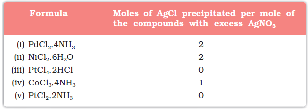
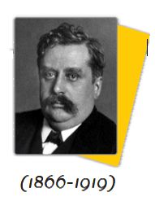

Coordination Compounds are the backbone of modern inorganic and bio–inorganic chemistry and chemical industry.
In the previous Unit we learnt that the transition metals form a large number of complex compounds in which the metal atoms are bound to a number of anions or neutral molecules. In modern terminology such compounds are called coordination compounds. The chemistry of coordination compounds is an important and challenging area of modern inorganic chemistry. New concepts of chemical bonding and molecular structure have provided insights into the functioning of vital components of biological systems. Chlorophyll, haemoglobin and vitamin B12 are coordination compounds of magnesium, iron and cobalt respectively. Variety of metallurgical processes, industrial catalysts and analytical reagents involve the use of coordination compounds. Coordination compounds also find many applications in electroplating, textile dyeing and medicinal chemistry.
9.1 Werner's Theory of Coordination Compounds
Alfred Werner (1866-1919), a Swiss chemist was the first to formulate his ideas about the structures of coordination compounds. He prepared and characterised a large number of coordination compounds and studied their physical and chemical behaviour by simple experimental techniques. Werner proposed the concept of a primary valence and a secondary valence for a metal ion. Binary compounds such as CrCl3, CoCl2 or PdCl2 have primary valence of 3, 2 and 2 respectively. In a series of compounds of cobalt(III) chloride with ammonia, it was found that some of the chloride ions could be precipitated as AgCl on adding excess silver nitrate solution in cold but some remained in solution.
1 mol CoCl3.6NH3 (Yellow) gave 3 mol AgCl
1 mol CoCl3.5NH3 (Purple) gave 2 mol AgCl
1 mol CoCl3.4NH3 (Green) gave 1 mol AgCl
1 mol CoCl3.4NH3 (Violet) gave 1 mol AgCl
These observations, together with the results of conductivity measurements in solution can be explained if (i) six groups in all, either chloride ions or ammonia molecules or both, remain bonded to the cobalt ion during the reaction and (ii) the compounds are formulated as shown in Table 9.1, where the atoms within the square brackets form a single entity which does not dissociate under the reaction conditions. Werner proposed the term secondary valence for the number of groups bound directly to the metal ion; in each of these examples the secondary valences are six.
Table 9.1: Formulation of Cobalt(III) Chloride-Ammonia Complexes
Note that the last two compounds in Table 9.1 have identical empirical formula, CoCl3.4NH3, but distinct properties. Such compounds are termed as isomers. Werner in 1898, propounded his theory of coordination compounds. The main postulates are:
1. In coordination compounds metals show two types of linkages (valences)-primary and secondary.
2. The primary valences are normally ionisable and are satisfied by negative ions.
3. The secondary valences are non ionisable. These are satisfied by neutral molecules or negative ions. The secondary valence is equal to the coordination number and is fixed for a metal.
4. The ions/groups bound by the secondary linkages to the metal have characteristic spatial arrangements corresponding to different coordination numbers.
In modern formulations, such spatial arrangements are called coordination polyhedra. The species within the square bracket are coordination entities or complexes and the ions outside the square bracket are called counter ions.
He further postulated that octahedral, tetrahedral and square planar geometrical shapes are more common in coordination compounds of transition metals. Thus, [Co(NH3)6]3+, [CoCl(NH3)5]2+ and [CoCl2(NH3)4]+ are octahedral entities, while [Ni(CO)4] and [PtCl4]2– are tetrahedral and square planar, respectively.
Example 9.1
On the basis of the following observations made with aqueous solutions, assign secondary valences to metals in the following compounds:
Solution

Solution
(i) Secondary 4 (ii) Secondary 6
(iii) Secondary 6 (iv) Secondary 6 (v) Secondary 4
Difference between a double salt and a complex
Both double salts as well as complexes are formed by the combination of two or more stable compounds in stoichiometric ratio. However, they differ in the fact that double salts such as carnallite, KCl.MgCl2.6H2O, Mohr’s salt, FeSO4.(NH4)2SO4.6H2O, potash alum, KAl(SO4)2.12H2O, etc. dissociate into simple ions completely when dissolved in water. However, complex ions such as [Fe(CN)6]4– of K4Fe(CN)6, do not dissociate into Fe2+ and CN– ions.

Werner was born on December 12, 1866, in Mülhouse, a small community in the French province of Alsace. His study of chemistry began in Karlsruhe (Germany) and continued in Zurich (Switzerland), where in his doctoral thesis in 1890, he explained the difference in properties of certain nitrogen containing organic substances on the basis of isomerism. He extended vant Hoff's theory of tetrahedral carbon atom and modified it for nitrogen. Werner showed optical and electrical differences between complex compounds based on physical measurements. In fact, Werner was the first to discover optical activity in certain coordination compounds.
He, at the age of 29 years became a full professor at Technische Hochschule in Zurich in 1895. Alfred Werner was a chemist and educationist. His accomplishments included the development of the theory of coordination compounds. This theory, in which Werner proposed revolutionary ideas about how atoms and molecules are linked together, was formulated in a span of only three years, from 1890 to 1893. The remainder of his career was spent gathering the experimental support required to validate his new ideas. Werner became the first Swiss chemist to win the Nobel Prize in 1913 for his work on the linkage of atoms and the coordination theory.